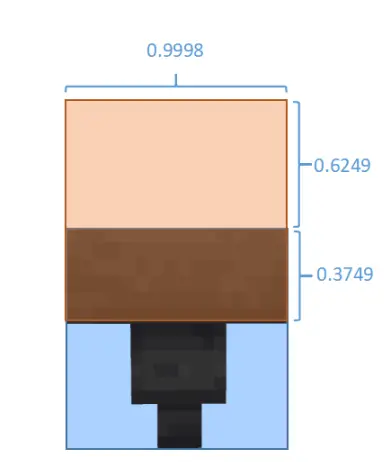
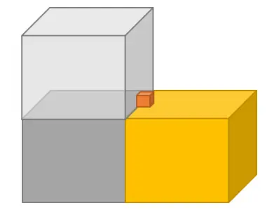
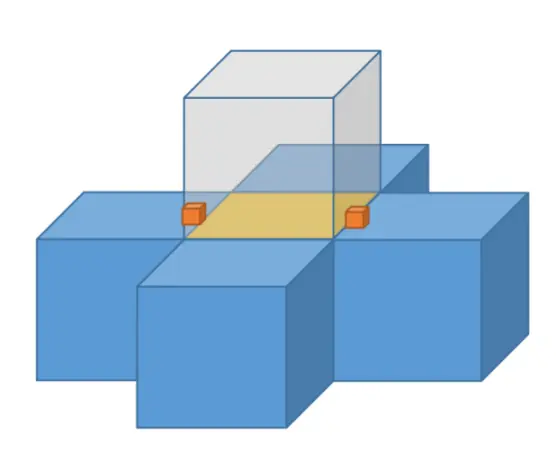
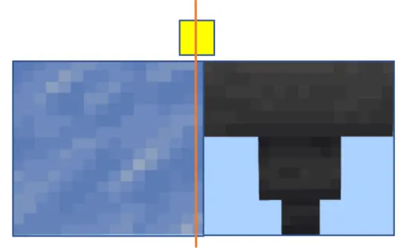
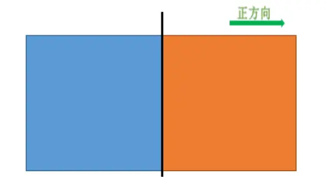
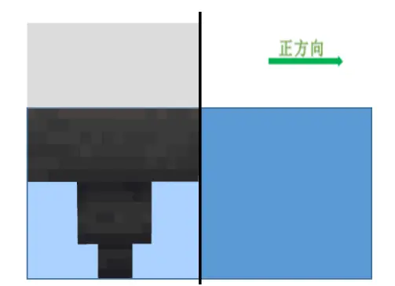
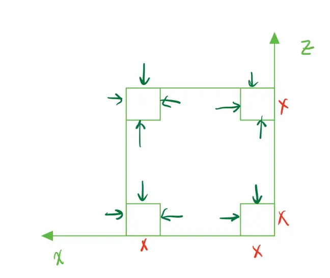

MCBE 关于漏斗的一些特性分析
由于漏斗的一些特性（bug）实在让人费解，所以我们拜托了@hhhxiao_从源码级别来分析了一下漏斗的行为，以此推断出了一些漏斗的特性（bug）成因。
一、漏斗的范围
在代码中，首先定义了漏斗的吸取范围为1*1*1，这个范围在漏斗上方是1*0.625*1，漏斗中1*0.375*1（漏斗上表面碰撞箱有凹陷），在这之后，吸收范围往六个方向各收缩0.0001格，变为总体0.9998*0.9998*0.9998。（如图）

下陷的区域保证了在漏斗内凹的物品也能被吸入
如图，假设漏斗（灰色）吸取范围为1，漏斗应该会吸取到处于隔壁方块边界的物品（如图橙色方块），而漏斗实际范围是0.9998，所以物品与漏斗吸取范围没有接触，不会吸取到这个物品。成功的防止了“误吸入”。

物品与漏斗范围之间隔了0.0001格
二、精度下溢导致的高xz区域漏斗范围增大
在x.z坐标超过[-2049,+2048]（以下简称2048）的时候。因为精度下溢的问题，漏斗上方的吸取范围重新回到1*0.9998*1（y轴并不可能超过2048）。这导致的问题就是漏斗可以不正确的吸取到处于旁边方块边界的物品。
（仅有x坐标超过[-2049,+2048]，而z坐标不超过[-2049,+2048]时，漏斗仅x轴范围扩大，变为（1*0.9998*0.9998），可得x，z坐标的计算是独立的，当x，z坐标都超过[-2049,+2048]时，漏斗范围才会变为1*0.9998*1）

消失的0.0001距离让擦边的物品能进入漏斗（图黄色方块）
3、区块边界限位失效问题的解释
在代码研究中可以发现，漏斗的吸取范围仅限于本区块（漏斗遍历整个区块的实体）。也就是说，如果在区块边界（如图，漏斗和冰中间是区块边界）。

掉落物实体坐标以中心为准，所以归属于左边的区块
由于掉落物的坐标判定以中心点为准，则掉落物在冰侧的区块，而漏斗在另一区块。漏斗无法读取到另一个区块的掉落物（因为漏斗只读取本区块的掉落物），即物品限位后漏斗无法吸取到物品——这就是常说的区块边界漏斗bug。
4、区域边界的归属判定
区块、方块边界（以下简称区域边界），属于正方向的区域
听不懂不要紧，我们来画个图。

正方向指x，z的正坐标（坐标增）方向
区域与区域之间有交界处，但是在游戏里面这个交界处却会带来麻烦——如果一个实体正好处于交界处，那么到底如何去判定实体在哪个区域。
Mojang选择把边界归于正方向的区域——也就是橙色区域。
那就是假如有个掉落物实体中心正好在两个区域中间，这个掉落物实体会被判定为属于正方向的区域（橙色），例如说摩擦因素取值会取正方向的方块的摩擦。
了解了这点以后，我们再来看漏斗范围扩大和这个判定会产生什么奇妙的化学反应。
5、bug修复了bug
Mojang对于漏斗所处位置的判定是将漏斗吸取范围边界的坐标截断为整数，然后加载坐标所处区块内所有掉落物。值得注意的是漏斗范围在2048外会被不正确的扩大到1，然后处于区块边界负方向侧漏斗的正方向边界已经与区块边界重合，而这个区块边界属于正方向的区块，即这个漏斗范围同时处于左右两个区块，这个跨区块的漏斗会吸取两个区块（在区块角落可能是三个）的掉落物——即用bug去解决了区块边界的bug（特性）。

扩大的漏斗范围边界与正方向区块边界重合
但是反方向（漏斗在正方向侧）则不能加载到另一侧区块（因为区块边界所属问题，可以自己尝试分析）
即在2048坐标外，区块边界的可用情况为

学姐的珍贵手绘，斯哈斯哈
本次专栏主要是由 @hhhxiao_ 的代码研究推论而来，感谢学姐对游戏代码的挖掘让我们能更加深刻的理解游戏机制。
本次专栏内容由车轴草@retrifolium 和影 @T0ShadowX 发现的bug延申讨论而成（最后延申的是不是有点太长了）
感谢@江雁苍穹 @钚钴鸟 @OEOTYAN 的大量猜想，讨论，测试。
如果您对本文有异议或者发现勘误，请私信我，我会尽快改正。